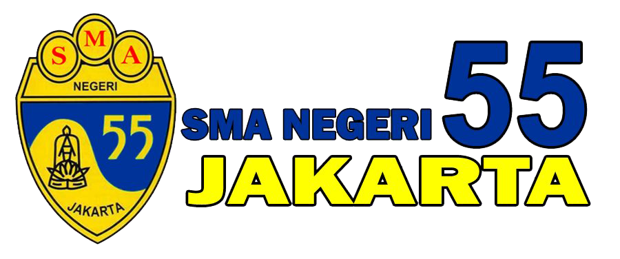
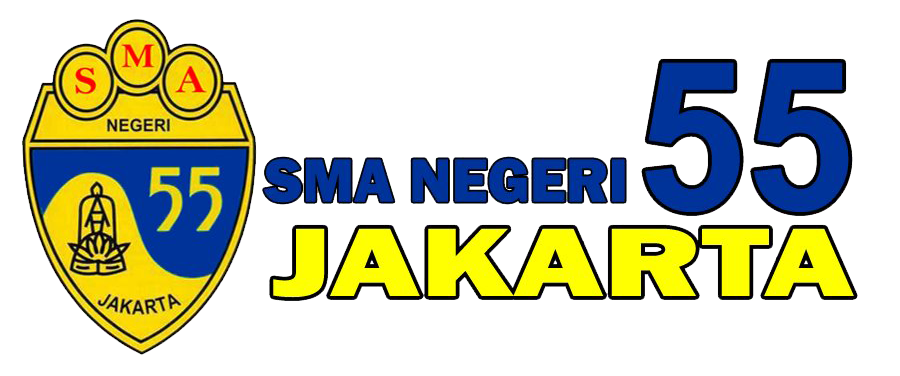

Tentang Saya
Profil Diri
Nama Lengkap: Falih Elmanda Ghaisan
NIM: 2407411073
Jurusan / Program Studi: TIK / Teknik Informatika
Kelas: TI-2C
Tempat, Tanggal Lahir: Jakarta, 1 Agustus 2006
Alamat: Jl. Mampang Prapatan 2 No. 15
Email Aktif: falihelmanda@gmail.com
No. HP: 081213992146
Hobi:
- Membaca Buku / Novel
- Bermain Game
- Mendengarkan Musik
- Berolahraga
- Menonton Film
Prestasi Akademik:
- Silver Medalist at KPATN 2024 in Mathematics - Januari 2024
- Gold Medalist at Kompetisi Sains Indonesia 2023 in Mathematics - Desember 2023
- Silver Medalist at Olimpiade Sains Nusantara 2023 - November 2023
- Silver Medalist at Kompetisi Sains Hardiknas 2023 - Mei 2023


Organisasi & Kepanitiaan:
-
HIMATIK PNJ
Anggota Departemen Pendidikan dan Teknologi (Februari 2025 – Sekarang)
Berperan aktif dalam edukasi teknologi dan dokumentasi kegiatan.
-
Mentoryou.id
Anggota Divisi Mentoring (Januari 2025 – Sekarang)
Membimbing siswa secara daring dan menyelenggarakan webinar/pelatihan.
-
CSC PNJ
Anggota Divisi Software Development (Desember 2024 – Sekarang)
Aktif dalam proyek software dan lomba pengembangan aplikasi.
-
CSFest PNJ
Ketua Divisi Acara (Oktober 2024)
Memimpin tim acara dalam kompetisi akademik dan olahraga.
-
SCOPELLA 55
Koordinator Humas (Agustus 2023 – September 2024)
Berhubungan dengan sekolah lain dan menyusun dokumen acara.
-
OSIS SMAN 55
Koordinator Humas (Oktober 2022 – Oktober 2023)
Mengelola komunikasi eksternal dan rapat divisi humas sekolah.
Soft & Hard Skill:
- Bahasa: Indonesia (Native), Inggris (Profesional)
- Ms.Office: Word, PowerPoint, Excel (untuk bisnis)
- Tools: ChatGPT, Perplexity, Claude, Power BI, Adobe Photoshop/Lightroom
- Programming: Python, C++/C/C#, Java, HTML5, CSS, JavaScript, Bootstrap
Riwayat Pendidikan
Nama Sekolah Dasar: SDN Mampang Prapatan 02 Pagi
Lokasi: Jakarta, Indonesia
Tahun Pendidikan: 2010 - 2016
Nama SMP: SMPN 182 Jakarta
Lokasi: Jakarta, Indonesia
Tahun Pendidikan: 2016 - 2020
Nama SMA: SMAN 55 Jakarta
Jurusan: MIPA
Lokasi: Jakarta, Indonesia
Tahun Pendidikan: 2020 - 2024
Universitas: Politeknik Negeri Jakarta
Jurusan: Teknik Informatika dan Komputer
Lokasi: Depok, Indonesia
Tahun Pendidikan: 2024 - Sekarang
.png)
 
